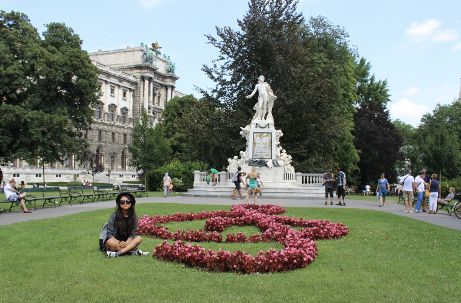

About Me
Hello! I'm Jeongyeon Yim from South Korea. I love music and art, so I sometimes go to the concert or exhibition. I can play the piano and violin, and I am also interested in many other traditional instruments. I enjoy trying new things especially traveling around the world with having new experiences in different cultures.
I'm in IMD program which has several great courses, and this is my 1st term. I'm here to start a new career in media industry but still not very sure what to do and what I can do well. After trying different part of media design, I hope that I can find the way successfully.